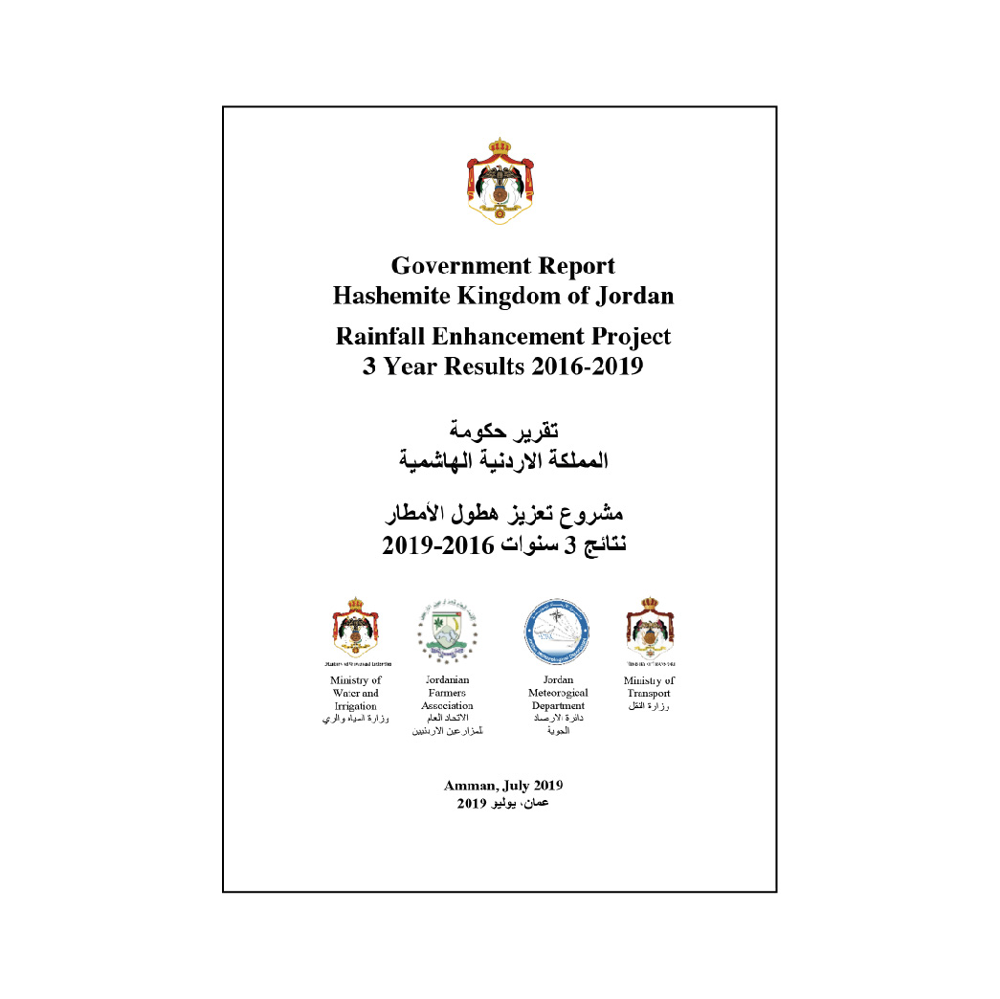

The Jordan Success Story:
How WeatherTec Changed the Whole Eco System of a Country
Governmental Report Hashemite Kingdom of Jordan
July, 2019
1. Report of the Jordan Meteorological Department, Ministry of Transport
2. Report of the Ministry for Water and Irrigation
3. Report of the Jordanian Farmers Union

Jordan National Program Impact Study
WeatherTec Rainfall Enhancement
February, 2019